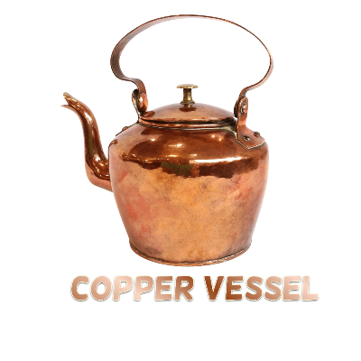

Copper Vessel Filtration

Copper comes with significant amounts of antimicrobial properties making it ideal for eliminating disease causing bacteria, fungi and viruses. When water gets stored for up to 8 hours in a copper bottle or a vessel, it undergoes oligodynamic effect, which means it gains the ability to kill several infection causing microbes, fungi besides maintaining the natural PH levels.
Based on studies that certain 355 copper alloys can kill 99.9% disease causing bacteria within just 2 hours of regular cleaning.
What does Copper Vessel remove:
Advantages of Copper Vessel:
- Helps in Weight Loss.
- Increase in Iron Levels.
- Slows down Aging
- Helps in digestion
- Reduce the transfer of contagious diseases like cold, cough, influenza and contamination.
రాగి గణనీయమైన మొత్తంలో యాంటీమైక్రోబయల్ లక్షణాలతో వస్తుంది, ఇది వ్యాధికి కారణమయ్యే బ్యాక్టీరియా, శిలీంధ్రాలు మరియు వైరస్లను తొలగించడానికి అనువైనది. ఒక రాగి సీసా లేదా పాత్రలో నీరు 8 గంటల వరకు నిల్వ చేయబడినప్పుడు, అది ఒలిగోడైనమిక్ ప్రభావానికి లోనవుతుంది, అంటే సహజ PH స్థాయిలను నిర్వహించడంతోపాటు సూక్ష్మజీవులు, శిలీంధ్రాలకు కారణమయ్యే అనేక ఇన్ఫెక్షన్లను చంపే సామర్థ్యాన్ని పొందుతుంది.
కొన్ని 355 రాగి మిశ్రమాలు సాధారణ శుభ్రపరిచే కేవలం 2 గంటలలోపే 99.9% వ్యాధికి కారణమయ్యే బ్యాక్టీరియాను చంపగలవని అధ్యయనాల ఆధారంగా.
రాగి పాత్ర ఏమి తొలగిస్తుంది:
- బ్యాక్టీరియా
- వైరస్లు
- ఫంగస్
రాగి పాత్ర యొక్క ప్రయోజనాలు:
- బరువు తగ్గడంలో సహాయపడుతుంది
- ఐరన్ లెవెల్సో పెరుగుదల
- వృద్ధాప్యాన్ని నెమ్మదిస్తుంది
- సరైన జీర్ణక్రియలో సహాయపడుతుంది
- జలుబు, దగ్గు, ఇన్ఫ్లుఎంజా మరియు కాలుష్యం వంటి అంటు వ్యాధుల బదిలీని తగ్గుతుంది